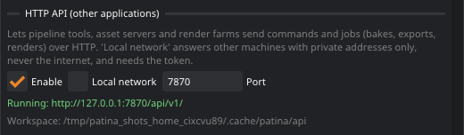

HTTP API and batch mode
Other programs can use Patina as a service: an asset pipeline that bakes every model checked in, a render farm that textures hundreds of props overnight, an in-house tool with a "make textures" button. They talk to Patina over HTTP with JSON, on this machine or across your local network, but never from the internet. For scripts and CI there is also a batch mode that runs a job file and exits.
Starting the API
patina --headless --http # this machine only, port 7870
patina --headless --lan --workspace /srv/patina # the local network, with a tokenIn the desktop application, turn it on in Edit › Preferences › HTTP API (Enable, and Local network for other machines). The window then takes requests while you work, and you can watch them happen.

On a server, run it headless: Linux needs no display (EGL); Windows needs a logged-in desktop session with a GPU driver.
| Option | Meaning |
|---|---|
--http, --http-port N | Start the API (default port 7870). On its own it answers this machine only. |
--lan | Also answer other machines of the local network (see who can connect). |
--bind ADDR | Listen on one network interface only, for example the internal network card of a server. |
--allow CIDR | Accept only these address ranges (plus this machine), for example --allow 10.20.0.0/16. Repeatable. |
--token T | The access token (or PATINA_TOKEN). With --lan one is generated if you give none. |
--workspace DIR | The folder for uploads and results. Relative paths in commands are inside it.
Default: api in Patina's cache folder. |
--sandbox | Refuse any path outside the workspace. Recommended for shared servers. |
--max-upload-mb N | The largest file that can be uploaded (default 4096). |
--cors-origin URL | Let a web page from this origin call the API (an intranet dashboard). Off by default. |
Who can connect
- This machine (the default): Patina listens on 127.0.0.1 only. Requests whose
Hostheader names another site are refused, so a web page can't reach the API through DNS tricks. - Local network (
--lan): Patina listens on the network but answers only clients with private addresses: 10.x, 172.16–31.x, 192.168.x, link-local 169.254.x, IPv6 unique-local (fc00::/7) and link-local (fe80::/10), and this machine. Anything else, including every internet address, gets403and a line in the log.--allownarrows this to your own ranges. - Token: on the network every request needs
Authorization: Bearer <token>(or anX-Patina-Tokenheader). If you don't give one, Patina generates it once, stores it inapi_tokenin the settings folder (on Linux readable only by you), and prints it at start-up. Preferences shows and copies it, and New token replaces it. Only/api/v1/healthworks without the token, for load balancers and monitoring. - Browsers: requests that carry an
Originheader (sent by web pages) are refused unless that origin is listed with--cors-origin.
--sandbox and a dedicated user account on shared
servers, and keep the port closed in the firewall toward anything that is not your network.Endpoints
All under http://host:7870/api/v1. Replies are JSON with "ok": true or "ok": false and an
"error" message.
| Request | Does |
|---|---|
GET /health | Version, whether a job is running, queue length. No token needed. |
GET /info | Version, workspace, limits, the current state (mesh, layers, resolution…). |
GET /commands | Every command with its description and JSON Schema (the same list Claude sees). |
GET /openapi.json | An OpenAPI 3 description of everything, for client generators and API tools. |
POST /commands/{name} | Runs one command; the body is its arguments. Answers when it is done. |
POST /jobs | Queues a job (several commands in order) and answers at once with its id (202). |
GET /jobs, GET /jobs/{id}?wait=S | Job status, progress and results. wait holds the
reply up to S seconds until the job finishes. |
DELETE /jobs/{id} | Cancels a job. |
PUT /files/{path} | Uploads a file into the workspace (the raw body). |
GET /files?dir=D&recursive=1 | Lists the workspace. |
GET /files/{path}, DELETE /files/{path} | Downloads or deletes a workspace file or folder. |
Every command works: opening meshes and projects, layers and smart materials, painting, UV
tools, bake_mesh_maps, bake_from_high_poly, export_textures, render_image,
save_project and the rest.
Jobs
Long work (bakes, high resolutions, many assets) belongs in jobs. Jobs run one at a time in the order they arrive. A job has the engine to itself while it runs, so no other client can change the project between its steps.
POST /api/v1/jobs
{
"name": "crate",
"stop_on_error": true,
"steps": [
{"cmd": "open_file", "args": {"path": "in/crate_low.glb"}},
{"cmd": "set_resolution", "args": {"resolution": 4096}},
{"cmd": "bake_from_high_poly", "args": {"path": "in/crate_high.glb"}},
{"cmd": "apply_smart_material","args": {"id": "patina_smart_worn_painted_metal"}},
{"cmd": "export_textures", "args": {"directory": "out/crate", "preset": "unreal"}}
]
}The status (GET /jobs/{id}) looks like this while it runs:
{"id": "j7-3fa2c1", "name": "crate", "status": "running", "steps": 5, "current_step": 2,
"progress": 0.52, "label": "Baking from the high-poly mesh", "results": [ ... ]}- status is
queued,running,done,failedorcancelled. - progress runs from 0 to 1 over the whole job. Bakes, renders and exports report their own progress.
- results has one entry per finished step:
cmd,ok,seconds, andresultorerror. Withstop_on_error(the default), the first failing step ends the job asfailed. - Canceling drops a queued job. A running one stops at the next safe point: bakes and turntable renders stop early, other steps finish first. The project is left as it was after the last finished step.
- The last 500 jobs are kept in memory; they don't survive a restart.
Single commands (POST /commands/…) wait up to 30 seconds while a job runs, then answer 409 (busy)
with a Retry-After header. ?busy_wait=S changes the wait. Commands that only read (get_state,
list_layers, list_materials, history…) are answered between the job's steps.
Files and paths
Relative paths in arguments (path, directory, …_path) are inside the workspace, so a client on
another machine uploads its inputs, runs commands with relative paths, and downloads the results:
curl -H "Authorization: Bearer $T" -X PUT --data-binary @crate_low.glb http://render-07:7870/api/v1/files/in/crate_low.glb
curl -H "Authorization: Bearer $T" "http://render-07:7870/api/v1/files?dir=out/crate"
curl -H "Authorization: Bearer $T" -o crate_BaseColor.png http://render-07:7870/api/v1/files/out/crate/crate_low_BaseColor.pngAbsolute paths work too when the server and the client share a disk (a network share), unless the server runs with
--sandbox. The file endpoints never reach outside the workspace.
The Python client
clients/python/patina_api.py (standard library only) wraps all of this:
from patina_api import Patina
pt = Patina("http://render-07:7870", token="…")
pt.upload("crate_low.glb", "in/crate_low.glb")
pt.upload("crate_high.glb", "in/crate_high.glb")
job = pt.run([("open_file", {"path": "in/crate_low.glb"}),
("bake_from_high_poly", {"path": "in/crate_high.glb"}),
("export_textures", {"directory": "out/crate", "preset": "gltf"})],
name="crate", on_progress=lambda j: print(j["progress"], j.get("label")))
for f in pt.files("out/crate"):
pt.download(f["path"], "textures/" + f["path"].split("/")[-1])pt.call("set_brush", size=40) runs a single command. Errors raise PatinaError (with the HTTP status) and
failed jobs raise JobFailed (with the job's results). For other languages, generate a client from
/api/v1/openapi.json.
A small render farm: examples/api/farm_bake.py takes a folder of name_low.glb /
name_high.glb pairs and a list of Patina servers, gives each server the next asset as soon as it is free, and
collects the textures. Run one Patina per GPU; each one works on one job at a time.
python3 examples/api/farm_bake.py --token $PATINA_TOKEN \
--server http://render-01:7870 --server http://render-02:7870 --preset unreal assets/Batch mode
patina run runs a job file on this machine without a window or a server, then exits. It suits CI, cron
and shell loops:
patina run bake_job.json --set low=crate_low.glb --set high=crate_high.glb --set asset=crate
for f in props/*_low.glb; do
n=$(basename "$f" _low.glb)
patina run bake_job.json --set low="$f" --set high="props/${n}_high.glb" --set asset="$n" --quiet || echo "$n failed"
doneThe job file has the same steps as an API job, plus optional default vars
(examples/api/bake_job.json is a complete one):
{
"name": "Bake and export",
"vars": {"resolution": "2048", "preset": "unreal"},
"steps": [
{"cmd": "open_file", "args": {"path": "${low}"}},
{"cmd": "set_resolution", "args": {"resolution": "${resolution}"}},
{"cmd": "bake_from_high_poly", "args": {"path": "${high}"}},
{"cmd": "export_textures", "args": {"directory": "out/${asset}", "preset": "${preset}"}}
]
}${name}is replaced by--set name=value, else byvars. A value that is a whole number ortrue/falsekeeps that type when it stands alone ("${resolution}"becomes 2048).${job_dir}and${cwd}are always defined. A name without a value stops the run before anything happens.- Relative paths are next to the job file.
- Each step prints one line on stderr (
[3/4] bake_from_high_poly ... ok (11.0 s);--quiethides them,--verboseadds the log). The report (every step's result) goes to stdout, or to a file with--report report.json. - Exit status: 0 every step worked, 1 a step failed, 2 the job file or its variables are wrong, 3 no GPU context.
patina call <command> '{"json": "arguments"}' runs one command and prints its result: in the Patina that is
already running on this machine (window or headless, through the command server), or in a headless Patina started just for
it. For example patina call export_again re-exports the project open in your window.
Gotchas
--allow if it is yours.GET /jobs/{id} or /health to watch a job;
those never wait.open_file or new_project, and run several Patina
processes (different --http-port, ideally one per GPU) to work in parallel.